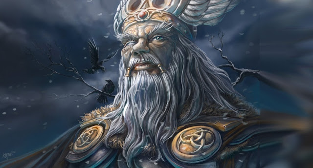
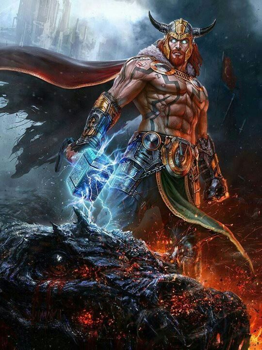
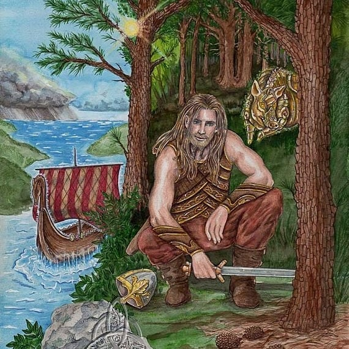
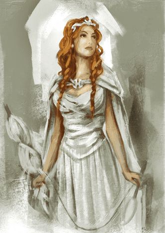
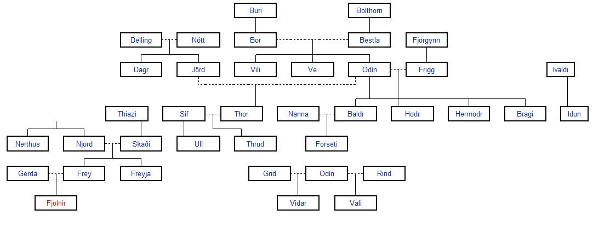

Dioses de Asgard
Hay una gran cantidad de dioses representativos en la mitología nórdica. A continuación se pueden encontrar
algunos de los dioses Aesir y Vanir mas representativos en la historia de Asgard.
Aesir
Odín

Odín, es el dios principal de la mitología nórdicos y padre de muchos de los dioses como Thor y Balder. Su
historia lo ha convertido en el dios de la sabiduría, esto se debe a que desde el momento que Odín junto con
sus hermanos Vili y Ve les dieron forma a los 9 mundos, y les dieron vida a los primeros seres humanos en
Midgard.
Se le atribuyen una gran cantidad de nombres a Odín debido a las aventuras y hazañas que ha logrado. Para
una gran cantidad de seres se le ha conocido como el padre de todo debido a que creo la vida en Midgard y
además sus hijos son los dioses más importantes de la mitología. En los pueblos germánicos su nombre se
conoce como Wotan o Woden envés de Odín.
Se le conoce a Odín como el rey o dios de los caídos, rey de los colgados, entre otros nombres debido a que
en unas de sus grandes aventuras tuvo que sacrificar su ojo derecho para obtener los conocimientos del
Yggdrasil y en otra aventura tuvo que ahorcarse para conocer los secretos de las nornas (Semidiosas con un
amplio conocimiento sobre el futuro).
Thor

Thor es uno de los dioses de la mitología nórdica más conocidos. Es conocido por ser uno de los habitantes
más fuertes de Asgard, se sabe que protege las construcciones, la juventud y el rayo. Además, se debe
mencionar que los padres de Thor son Odín y Freya, y que se casó con la diosa Sif, con quien tuvo tres
hijos, Magni, Modi y Trud.
Thor es un amante de la guerra, por lo que se le conoce por participar en innumerables batallas con el apoyo
de los dioses y su martillo Mjölnir, el cual fue un regalo del dios Loki, después de que el dios de los
engaños y las mentiras le quitara la cabellera a su bella esposa Sif.
El destino de Thor es fallecer durante el fin del mundo, denominado Ragnarok, cuando luche contra las
bestias de los nueve mundos. El destino de Thor es morir después de pelear contra la serpiente de Midgard
Jörmundgander, debido al veneno que expulsa después de morir.
Vanir
Frey

Frey es conocido por ser el dios de la fertilidad, debido a que tiene conexiones con las cosechas, el
sol, la lluvia, la virilidad y las bodas. En Midgard se le dio una gran importancia a este dios ya que se
encargaba de mantener los cultivos en buen estado y promover por los pueblos grandes cosechas.
Es uno de los dioses más representativos de los Vanir, es Hijo de Njord y hermano mellizo de Freyja. Tuvo un
papel muy importante en la guerra de los Aesir y los Vanir ya que el fue uno de los encargados de formar una
paz duradera entre los reinos en guerra Asgard y Vanaheim. Durante la guerra, Frey tuvo que pasar varios
días como rehén de los Aesir pero logro un acuerdo con Odín que además de acabar la guerra permitió que los
dioses pudieran pasar de un reino a otro sin ningún problema.
Freyja

Freyja en la mitología nórdica siempre ha tenido una gran relevancia debido a que ella participa como
líder en una gran cantidad de batallas que han tenido los dioses. Desde su nacimiento estaba participando
como la hija de Njord en la guerra entre los Aesir y los Vanir. Cuando finalizo la guerra entre los dioses,
Freyja se mudó a Asgard en donde se casó con Odín y tomo el trono del palacio Fólkvangr en donde recibía una
gran cantidad de guerreros muertos en combate.
Freyja es conocida como la diosa del amor, fertilidad y la belleza, debido a que posee una belleza única. Se
le atribuye a ella una gran habilidad de liderazgos, que le ha permitido alcanzar con sus ejércitos la
victoria. Junto con su hermano Frey, Freyja ayuda a los seres de los nueve reinos a tener bellos paisajes y
a disfrutar lo que les ofrece la naturaleza. En Midgard, se frecuenta invocar a Freyja para los partos.
Árbol genealógico de los dioses nórdicos

Volver al inicio
© Luis Santiago Solano Pardo - Universidad Nacional de Colombia
Correo
lusolanop@unal.edu.co
Gráfica interactiva